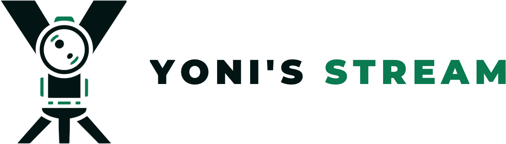

Recursos de marca
La marca, lista para usar
Logos, símbolo, colores y tipografías de Yoni's Stream para hablar de la app, reseñarla o enlazarla. Todo en PNG transparente y en alta resolución.
Logos y símbolo
Elige la versión según el fondo. Si dudas, usa el logo horizontal a color.








Espacio libre y tamaño mínimo
Deja alrededor del logo un margen libre igual a la cuarta parte de su altura (la medida «x»). Ahí no van textos, otros logos ni bordes.
Tamaño mínimo
- Símbolo: 24 px de alto en pantalla, 10 mm en papel.
- Logo horizontal: 120 px de ancho en pantalla, 35 mm en papel.
- Icono de la app: 48 px.
Colores
Toca un color para copiar su código.
Tipografías
Las dos son gratuitas (licencia SIL Open Font) y están en Google Fonts.
Montserrat Black
Logotipo y titulares, en mayúsculas y con espaciado amplio.
Google Fonts ↗Lo que no se hace
Cómo se escribe
Yoni's Stream: con Y y S mayúsculas y apóstrofo. En el logotipo va todo en mayúsculas: YONI'S STREAM.
Uso
Puedes usar estos recursos para hablar de Yoni's Stream, reseñarla o enlazar su ficha de Google Play. No los uses para dar a entender que la app patrocina o respalda algo sin permiso.
¿Prensa o colaboraciones? Escríbenos a yonisstreamstudio@gmail.com